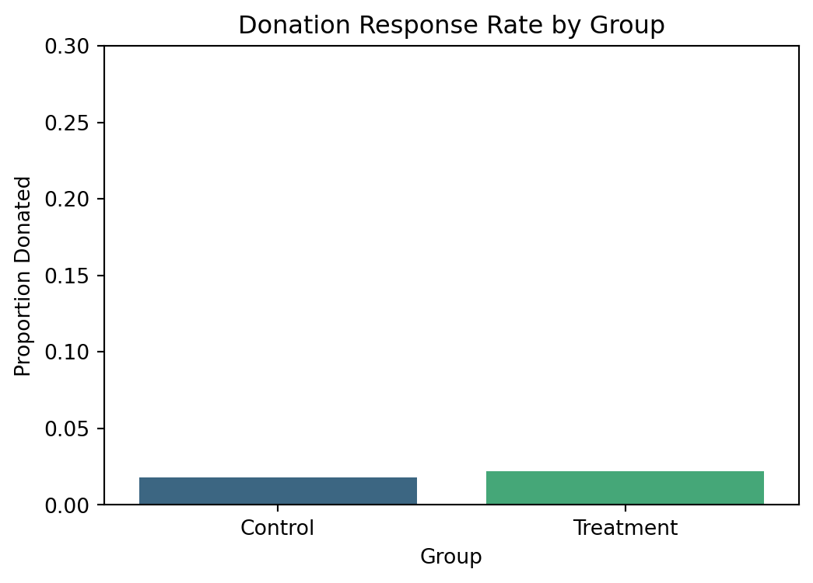
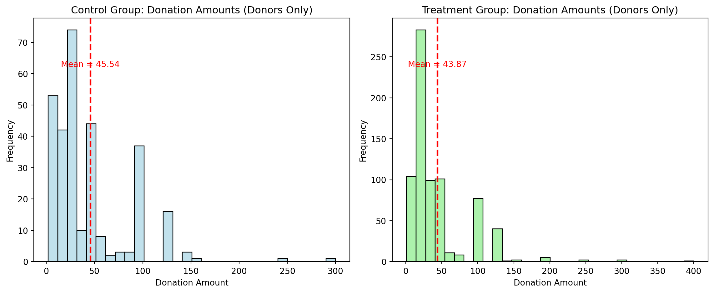
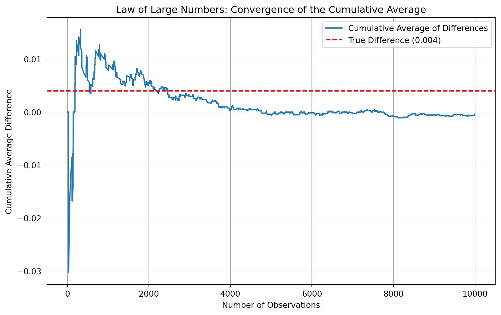
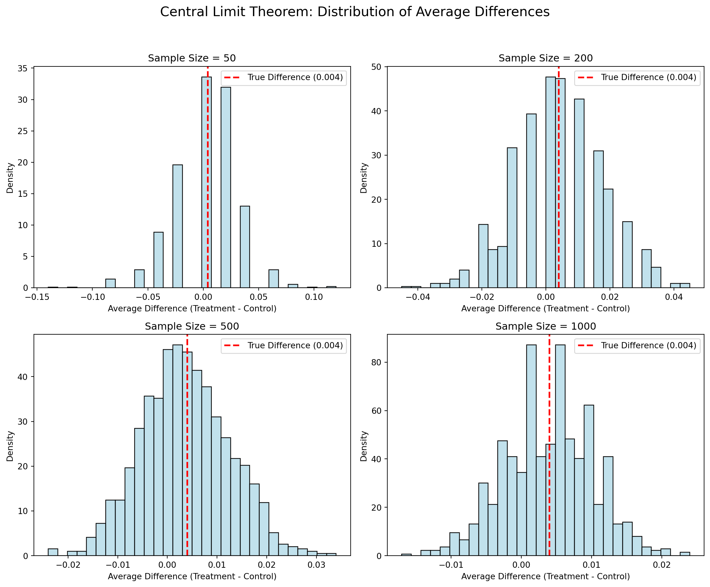

Dean Karlan at Yale and John List at the University of Chicago conducted a field experiment to test the effectiveness of different fundraising letters. They sent out 50,000 fundraising letters to potential donors, randomly assigning each letter to one of three treatments: a standard letter, a matching grant letter, or a challenge grant letter. They published the results of this experiment in the American Economic Review in 2007. The article and supporting data are available from the AEA website and from Innovations for Poverty Action as part of Harvard’s Dataverse.
In this study, the researchers mailed out approximately 50,000 fundraising letters to past donors of a nonprofit organization, randomly assigning each individual to one of three experimental treatments. The treatments varied in key design features that aimed to lower the effective “price” of donating. In the control group, recipients received a standard fundraising letter that followed the organization’s typical solicitations—with no mention of matching or challenge grants. For the treatment groups, two alternative letter formats were used: one that incorporated a matching grant offer and another that featured a challenge grant offer. In the matching treatment, an additional paragraph was inserted in the letter to announce that a prominent leadership donor would match every donation dollar—for example, a 1:1 match, meaning that for each dollar the recipient donated, the organization would receive an extra dollar from the donor. The challenge treatment was designed to highlight the effectiveness and urgency of the fundraising effort, sometimes by using higher matching ratios such as 2:1 or 3:1.
Beyond just the matching ratio, the experiment also varied other elements of the solicitation letter. For instance, the maximum amount available to be matched (e.g., $25,000, $50,000, or $100,000) was randomly assigned, and the letter included different suggested donation amounts based on the donor’s past giving history. This multifaceted randomization allowed the authors to disentangle whether and how explicitly lowering the “price” of a donation—with the promise of additional matching funds—increases both the likelihood that a donor will contribute and the amount they give.
This project seeks to replicate their results.
Data
Description
We begin by reading the Stata data file (karlan_list_2007.dta) into Python using Pandas. This dataset comes from Karlan and List’s 2007 field experiment and contains 50,000 observations (one for each fundraising letter) and over 50 variables that document experimental assignments, donation outcomes, and donor characteristics. The experimental design includes indicators for whether the letter was a control or a treatment (matching/challenge) along with features such as the match ratio (e.g., 1:1, 2:1, or 3:1) and the match threshold (e.g., $25,000, $50,000, $100,000, or unstated). In addition, the dataset contains variables that measure donor characteristics (e.g. previous donation history, demographic information, and proxy measures for political environment) that allow for an analysis of heterogeneous effects.
Code
import pandas as pdimport matplotlib.pyplot as pltimport seaborn as snsimport statsmodels.api as smimport statsmodels.formula.api as smf# Load the Stata filedata = pd.read_stata("karlan_list_2007.dta")data.head()
treatment
control
ratio
ratio2
ratio3
size
size25
size50
size100
sizeno
...
redcty
bluecty
pwhite
pblack
page18_39
ave_hh_sz
median_hhincome
powner
psch_atlstba
pop_propurban
0
0
1
Control
0
0
Control
0
0
0
0
...
0.0
1.0
0.446493
0.527769
0.317591
2.10
28517.0
0.499807
0.324528
1.0
1
0
1
Control
0
0
Control
0
0
0
0
...
1.0
0.0
NaN
NaN
NaN
NaN
NaN
NaN
NaN
NaN
2
1
0
1
0
0
$100,000
0
0
1
0
...
0.0
1.0
0.935706
0.011948
0.276128
2.48
51175.0
0.721941
0.192668
1.0
3
1
0
1
0
0
Unstated
0
0
0
1
...
1.0
0.0
0.888331
0.010760
0.279412
2.65
79269.0
0.920431
0.412142
1.0
4
1
0
1
0
0
$50,000
0
1
0
0
...
0.0
1.0
0.759014
0.127421
0.442389
1.85
40908.0
0.416072
0.439965
1.0
5 rows × 51 columns
Code
data.describe()
treatment
control
ratio2
ratio3
size25
size50
size100
sizeno
askd1
askd2
...
redcty
bluecty
pwhite
pblack
page18_39
ave_hh_sz
median_hhincome
powner
psch_atlstba
pop_propurban
count
50083.000000
50083.000000
50083.000000
50083.000000
50083.000000
50083.000000
50083.000000
50083.000000
50083.000000
50083.000000
...
49978.000000
49978.000000
48217.000000
48047.000000
48217.000000
48221.000000
48209.000000
48214.000000
48215.000000
48217.000000
mean
0.666813
0.333187
0.222311
0.222211
0.166723
0.166623
0.166723
0.166743
0.222311
0.222291
...
0.510245
0.488715
0.819599
0.086710
0.321694
2.429012
54815.700533
0.669418
0.391661
0.871968
std
0.471357
0.471357
0.415803
0.415736
0.372732
0.372643
0.372732
0.372750
0.415803
0.415790
...
0.499900
0.499878
0.168561
0.135868
0.103039
0.378115
22027.316665
0.193405
0.186599
0.258654
min
0.000000
0.000000
0.000000
0.000000
0.000000
0.000000
0.000000
0.000000
0.000000
0.000000
...
0.000000
0.000000
0.009418
0.000000
0.000000
0.000000
5000.000000
0.000000
0.000000
0.000000
25%
0.000000
0.000000
0.000000
0.000000
0.000000
0.000000
0.000000
0.000000
0.000000
0.000000
...
0.000000
0.000000
0.755845
0.014729
0.258311
2.210000
39181.000000
0.560222
0.235647
0.884929
50%
1.000000
0.000000
0.000000
0.000000
0.000000
0.000000
0.000000
0.000000
0.000000
0.000000
...
1.000000
0.000000
0.872797
0.036554
0.305534
2.440000
50673.000000
0.712296
0.373744
1.000000
75%
1.000000
1.000000
0.000000
0.000000
0.000000
0.000000
0.000000
0.000000
0.000000
0.000000
...
1.000000
1.000000
0.938827
0.090882
0.369132
2.660000
66005.000000
0.816798
0.530036
1.000000
max
1.000000
1.000000
1.000000
1.000000
1.000000
1.000000
1.000000
1.000000
1.000000
1.000000
...
1.000000
1.000000
1.000000
0.989622
0.997544
5.270000
200001.000000
1.000000
1.000000
1.000000
8 rows × 48 columns
Code
# Group by treatment and compute average donation and response rategroup_stats = data.groupby("treatment").agg( response_rate=("gave", "mean"), avg_donation=("gave", lambda x: data.loc[x.index, "amount"].mean()))group_stats.reset_index()
treatment
response_rate
avg_donation
0
0
0.017858
0.813268
1
1
0.022039
0.966873
Variable Definitions
Variable
Description
treatment
Treatment
control
Control
ratio
Match ratio
ratio2
2:1 match ratio
ratio3
3:1 match ratio
size
Match threshold
size25
$25,000 match threshold
size50
$50,000 match threshold
size100
$100,000 match threshold
sizeno
Unstated match threshold
ask
Suggested donation amount
askd1
Suggested donation was highest previous contribution
askd2
Suggested donation was 1.25 x highest previous contribution
askd3
Suggested donation was 1.50 x highest previous contribution
ask1
Highest previous contribution (for suggestion)
ask2
1.25 x highest previous contribution (for suggestion)
ask3
1.50 x highest previous contribution (for suggestion)
amount
Dollars given
gave
Gave anything
amountchange
Change in amount given
hpa
Highest previous contribution
ltmedmra
Small prior donor: last gift was less than median $35
freq
Number of prior donations
years
Number of years since initial donation
year5
At least 5 years since initial donation
mrm2
Number of months since last donation
dormant
Already donated in 2005
female
Female
couple
Couple
state50one
State tag: 1 for one observation of each of 50 states; 0 otherwise
nonlit
Nonlitigation
cases
Court cases from state in 2004-5 in which organization was involved
statecnt
Percent of sample from state
stateresponse
Proportion of sample from the state who gave
stateresponset
Proportion of treated sample from the state who gave
stateresponsec
Proportion of control sample from the state who gave
stateresponsetminc
stateresponset - stateresponsec
perbush
State vote share for Bush
close25
State vote share for Bush between 47.5% and 52.5%
red0
Red state
blue0
Blue state
redcty
Red county
bluecty
Blue county
pwhite
Proportion white within zip code
pblack
Proportion black within zip code
page18_39
Proportion age 18-39 within zip code
ave_hh_sz
Average household size within zip code
median_hhincome
Median household income within zip code
powner
Proportion house owner within zip code
psch_atlstba
Proportion who finished college within zip code
pop_propurban
Proportion of population urban within zip code
The dataset contains a mixture of experimental design variables (e.g., treatment, control, ratio, size, and various versions of the suggested donation variables) and donor characteristics (e.g., female, couple, and zip code–level demographic information). This rich set of variables supports both a direct replication of the original study’s effects as well as further investigation into heterogeneous treatment responses.
Balance Test
As an ad hoc test of the randomization mechanism, I provide a series of tests that compare aspects of the treatment and control groups to assess whether they are statistically significantly different from one another.
We perform two analyses: T-test Approach and Linear Regression Approach.
T-test Approach
Code
import scipy.stats as stats# Drop missing values for the variable mrm2 (months since last donation)data_n = data.dropna(subset=["mrm2"])treatment_group = data_n[data_n["treatment"] ==1]["mrm2"]control_group = data_n[data_n["treatment"] ==0]["mrm2"]t_stat, p_val = stats.ttest_ind(treatment_group, control_group, equal_var=True)print("T-test for mrm2:")print(" t-statistic =", round(t_stat, 4))print(" p-value =", round(p_val, 4))
T-test for mrm2:
t-statistic = 0.1195
p-value = 0.9049
We first conduct a two-sample t-test comparing the means of mrm2 between the treatment and control groups using the formula:
\[
t = \frac{\bar{x}_1 - \bar{x}_0}{\sqrt{\frac{s_1^2}{n_1} + \frac{s_0^2}{n_0}}}
\]
Since the p-value is much greater than 0.05, we fail to reject the null hypothesis. There is no statistically significant difference between the two groups in terms of months since last donation.
Linear Regression Approach
Code
import statsmodels.formula.api as smf# Run a linear regression of mrm2 on the treatment indicator.# The model: mrm2 = beta0 + beta1 * treatment + error.model = smf.ols("mrm2 ~ treatment", data=data).fit()print("Linear Regression Output (mrm2 ~ treatment):")print(model.summary().tables[1])
This result matches the t-test output exactly (as expected, since the two methods are equivalent in this context). The coefficient is close to zero and not statistically significant, providing further evidence that the treatment and control groups are balanced on this variable.
The purpose of these tests is to assess whether the randomization successfully created equivalent groups on observable characteristics. Since both the t-test and regression show no significant differences in mrm2, we conclude that this variable is balanced across the groups. This kind of table and analysis appears in Table 1 of the original Karlan and List (2007) paper. Including such balance checks is standard in experimental work—it helps ensure that differences in outcomes can be attributed to the treatment and not to confounding factors.
Experimental Results
Charitable Contribution Made
First, we analyze whether matched donations lead to an increased response rate—that is, an increased probability that someone donates. In our data, the binary variable gave equals 1 if a donation was made and 0 otherwise.
Below is a barplot with two bars: one for the control group and one for the treatment group. Each bar represents the proportion of people in that group who donated.
Code
# Make sure to drop any missing values in the outcome variable (if needed)data_n = data.dropna(subset=["gave"])# Compute the proportion of individuals who gave (gave==1) by treatment group.prop_data = data_n.groupby("treatment")["gave"].mean().reset_index()prop_data["Group"] = prop_data["treatment"].map({0: "Control", 1: "Treatment"})# Create the barplot using seaborn.plt.figure(figsize=(6, 4))sns.barplot(x="Group", y="gave", data=prop_data, palette="viridis")plt.ylabel("Proportion Donated")plt.title("Donation Response Rate by Group")plt.ylim(0, 0.3)plt.show()
C:\Users\22344\AppData\Local\Temp\ipykernel_1044\256720481.py:10: FutureWarning:
Passing `palette` without assigning `hue` is deprecated and will be removed in v0.14.0. Assign the `x` variable to `hue` and set `legend=False` for the same effect.

T-test for Donation Response
Code
# Drop rows with missing values in 'gave' (if any)data_n = data.dropna(subset=["gave"])# Separate the binary outcome for the treatment and control groups.treatment_outcome = data_n[data_n["treatment"] ==1]["gave"]control_outcome = data_n[data_n["treatment"] ==0]["gave"]# Conduct an independent-samples t-test assuming equal variances.t_stat, p_val = stats.ttest_ind(treatment_outcome, control_outcome, equal_var=True)print("T-test for the binary outcome 'gave':")print(" t-statistic =", round(t_stat, 4))print(" p-value =", round(p_val, 4))
T-test for the binary outcome 'gave':
t-statistic = 3.1014
p-value = 0.0019
The t-test result shows a t-statistic of 3.10 and a p-value of 0.0019, which is well below the common threshold of 0.05. This means the observed difference in donation rates is very unlikely to be due to chance. The regression confirms this: the estimated treatment effect (treatment coefficient) is 0.0042, or about a 0.42 percentage point increase in the likelihood of donating for those who received the matching offer. Although this might sound small, it’s a relative increase of over 23% compared to the control group’s base rate of ~1.8% (the intercept).
These findings are a powerful demonstration of how framing and perceived impact can affect real-world decisions. Even though the monetary benefit to the donor doesn’t change, simply highlighting that their donation will be matched makes giving feel more impactful or worthwhile. This reflects a broader pattern in behavioral economics: people are more motivated when they believe their actions make a bigger difference People aren’t just giving because they can—they’re giving because the matching offer increases the perceived value of their contribution. This supports the theoretical idea that lowering the “price” of a public good (or increasing its “value”) increases its provision, even in voluntary settings.
To assess the effect of being offered a matched donation on the likelihood of donating, we estimate a probit regression where the outcome is a binary variable (gave) indicating whether a donation was made. The key independent variable is the treatment assignment (treatment = 1 if the individual received a letter with a matching grant, 0 otherwise).
This finding replicates Table 3, Column 1 of Karlan and List (2007), reinforcing the conclusion that even modest changes to how charitable appeals are framed—such as offering to match a donor’s contribution—can have a measurable impact on donor behavior. These results support the broader theory that people are more likely to contribute when they perceive that their donation will go further. From a fundraising strategy perspective, this suggests that matching offers are an effective lever to boost response rates.
Differences between Match Rates
Next, I assess the effectiveness of different sizes of matched donations on the response rate.
In this section, we assess whether the size of the matched donation (i.e., the match ratio) has an effect on whether people donate. In our experiment, treatment letters were randomly assigned to include one of three match ratios: 1:1, 2:1, or 3:1. According to the original study, the figures suggest that while a matching offer increases the likelihood of donating relative to a control group, further increases in the match ratio (from 1:1 to 2:1 and from 2:1 to 3:1) do not have additional effects.
T-test by Match Ratio We first restrict our analysis to the treatment group, then calculate the donation rate (mean of gave) for each match ratio, and finally perform t-tests.
Code
treatment_data = data[data["treatment"] ==1].dropna(subset=["gave"])# Assuming the dataset contains three dummy variables:# 'ratio' indicates a 1:1 match, 'ratio2' indicates a 2:1 match,# and 'ratio3' indicates a 3:1 match.# (In each observation, exactly one of these is equal to 1.)# Subset donation outcomes for each match ratio.group_ratio1 = treatment_data[treatment_data["ratio"] ==1]["gave"]group_ratio2 = treatment_data[treatment_data["ratio2"] ==1]["gave"]group_ratio3 = treatment_data[treatment_data["ratio3"] ==1]["gave"]# T-test: Compare 1:1 vs. 2:1t_stat_1_2, p_val_1_2 = stats.ttest_ind(group_ratio1, group_ratio2, equal_var=True)print("T-test for 1:1 vs 2:1 match rates:")print(" t-statistic =", round(t_stat_1_2, 4))print(" p-value =", round(p_val_1_2, 4))# T-test: Compare 2:1 vs. 3:1t_stat_2_3, p_val_2_3 = stats.ttest_ind(group_ratio2, group_ratio3, equal_var=True)print("\nT-test for 2:1 vs 3:1 match rates:")print(" t-statistic =", round(t_stat_2_3, 4))print(" p-value =", round(p_val_2_3, 4))
T-test for 1:1 vs 2:1 match rates:
t-statistic = -0.965
p-value = 0.3345
T-test for 2:1 vs 3:1 match rates:
t-statistic = -0.0501
p-value = 0.96
Regression Analysis by Match Ratio We now create a variable ratio1 (which is identical to ratio) for clarity, and then regress gave on the match ratio dummies without an intercept.
Code
treatment_data = treatment_data.copy()treatment_data["ratio1"] = treatment_data["ratio"]# Run the regression without an intercept to estimate group means directly.model_match = smf.ols("gave ~ ratio1 + ratio2 + ratio3 - 1", data=treatment_data).fit()print("Regression Results (no intercept):")print(model_match.summary().tables[1])
C:\Users\22344\AppData\Roaming\Python\Python311\site-packages\statsmodels\regression\linear_model.py:1966: RuntimeWarning:
divide by zero encountered in scalar divide
Calculating and Comparing Differences
Code
treatment_data = treatment_data.copy()treatment_data["ratio1"] = pd.to_numeric(treatment_data["ratio"], errors='coerce')treatment_data["ratio2"] = pd.to_numeric(treatment_data["ratio2"], errors='coerce')treatment_data["ratio3"] = pd.to_numeric(treatment_data["ratio3"], errors='coerce')# Run the regression without an intercept:model_match = smf.ols("gave ~ ratio1 + ratio2 + ratio3 - 1", data=treatment_data).fit()# Check what parameter names are in the fitted model:print("Model Parameters:", model_match.params.index.tolist())# Now extract the coefficients:coeffs = model_match.paramsmu_ratio1 = coeffs["ratio1"]mu_ratio2 = coeffs["ratio2"]mu_ratio3 = coeffs["ratio3"]diff_2_vs_1_coef = mu_ratio2 - mu_ratio1diff_3_vs_2_coef = mu_ratio3 - mu_ratio2print("Fitted Coefficient Differences:")print(" Difference between 2:1 and 1:1 (regression):", round(diff_2_vs_1_coef, 4))print(" Difference between 3:1 and 2:1 (regression):", round(diff_3_vs_2_coef, 4))
Model Parameters: ['ratio1', 'ratio2', 'ratio3']
Fitted Coefficient Differences:
Difference between 2:1 and 1:1 (regression): -0.0396
Difference between 3:1 and 2:1 (regression): -0.0206
Both our t‑tests and regression analyses converge on the same conclusion: although the introduction of a matching donation offer (versus no match) increases the probability that an individual donates, increasing the match ratio beyond 1:1 (i.e., comparing 1:1 to 2:1 and 2:1 to 3:1) does not further increase the response rate in a statistically significant way. In plain language, donors seem to respond to the existence of a matching offer rather than the exact size of the match. This finding supports the observation mentioned by the authors on page 8 of the Karlan and List paper that “figures suggest” no additional effect of increasing the match ratio beyond 1:1.
Size of Charitable Contribution
In this subsection, I analyze the effect of the size of matched donation on the size of the charitable contribution.
Full Sample Analysis: We run a t‑test and bivariate linear regression of the donation amount (variable amount) on treatment status, using all observations. Since many people did not donate (i.e. their donation amount is zero), this analysis mixes two effects:
The increased likelihood of donating, and
The actual amount given among donors.
Code
data_n = data.dropna(subset=["amount"])# T-test comparing donation amounts between treatment and control groupstreatment_amount = data_n[data_n["treatment"] ==1]["amount"]control_amount = data_n[data_n["treatment"] ==0]["amount"]t_stat_full, p_val_full = stats.ttest_ind(treatment_amount, control_amount, equal_var=True)print("Full Sample T-test for donation amount:")print(" t-statistic =", round(t_stat_full, 4))print(" p-value =", round(p_val_full, 4))# Bivariate linear regression using the full sample.model_full = smf.ols("amount ~ treatment", data=data_n).fit()print("\nFull Sample Linear Regression Results (amount ~ treatment):")print(model_full.summary().tables[1])
Full Sample T-test for donation amount:
t-statistic = 1.8605
p-value = 0.0628
Full Sample Linear Regression Results (amount ~ treatment):
==============================================================================
coef std err t P>|t| [0.025 0.975]
------------------------------------------------------------------------------
Intercept 0.8133 0.067 12.063 0.000 0.681 0.945
treatment 0.1536 0.083 1.861 0.063 -0.008 0.315
==============================================================================
The t‑test produced a t‑statistic of approximately 1.861 with a p‑value of 0.0628. This result is marginally non‑significant by the conventional 0.05 threshold, suggesting that—when considering the entire sample—the average donation in the treatment group is somewhat higher than in the control group, but the evidence is not strong enough to conclusively rule out that this difference might be due to chance. The estimated intercept was 0.8133, and the treatment coefficient was 0.1536 with a corresponding t‑statistic of 1.861 and a p‑value of 0.063. These results are consistent with the t‑test.
There is an increase in the overall donation amount when a matching donation offer is included. However, much of this overall effect is likely driven by an increase in the probability of donating rather than by a substantially higher donation amount among those who do give. That is, while the matching offer appears to encourage more people to donate, it does not necessarily lead existing donors to give much more money.
Code
data_n = data.dropna(subset=["amount"])donors = data[data["amount"] >0]# Conduct a t-test comparing donation amounts among donors # between treatment and control groups.treatment_amount_cond = donors[donors["treatment"] ==1]["amount"]control_amount_cond = donors[donors["treatment"] ==0]["amount"]t_stat_cond, p_val_cond = stats.ttest_ind(treatment_amount_cond, control_amount_cond, equal_var=True)print("Conditional T-test for donation amount (donors only):")print(" t-statistic =", round(t_stat_cond, 4))print(" p-value =", round(p_val_cond, 4))# Run a bivariate linear regression of donation amount on treatment among donors.model_cond = smf.ols("amount ~ treatment", data=donors).fit()print("\nConditional Linear Regression Results (amount ~ treatment) among donors:")print(model_cond.summary().tables[1])
The t-test indicates that the average donation amount among donors does not differ significantly between the treatment and control groups. The intercept is estimated at 45.54 representing the average donation amount among control group donors. The treatment coefficient is estimated at -1.67 with a standard error of 2.87 (t = -0.581, p = 0.561). This coefficient indicates that, among donors, those in the treatment group donate on average about $1.67 less than those in the control group. However, the difference is not statistically significant.
When we restrict the analysis to individuals who donate, the matching treatment does not appear to significantly affect how much they donate. Although the unconditional analysis (which includes both donors and non-donors) shows that the treatment increases the overall probability of donating, the conditional analysis suggests that, among those who choose to donate, the donation size remains largely unchanged. In summary, these results suggest that the matching offer primarily works by encouraging more people to donate; it does not have a significant effect on increasing the average donation size among those who already decide to give.
Code
data_n = data.dropna(subset=["amount"])# Restrict analysis to people who donated (amount > 0)donors = data_n[data["amount"] >0]# Separate the donation amounts by treatment grouptreatment_donors = donors[donors["treatment"] ==1]["amount"]control_donors = donors[donors["treatment"] ==0]["amount"]# Calculate the mean donation amount for each groupmean_treatment = treatment_donors.mean()mean_control = control_donors.mean()# Set up the plotting areaplt.figure(figsize=(12, 5))# Plot histogram for the Control groupplt.subplot(1, 2, 1)sns.histplot(control_donors, bins=30, kde=False, color="lightblue")plt.axvline(mean_control, color="red", linestyle="dashed", linewidth=2)plt.title("Control Group: Donation Amounts (Donors Only)")plt.xlabel("Donation Amount")plt.ylabel("Frequency")plt.text(mean_control, plt.ylim()[1]*0.8, f"Mean = {mean_control:.2f}", color="red", ha="center")# Plot histogram for the Treatment groupplt.subplot(1, 2, 2)sns.histplot(treatment_donors, bins=30, kde=False, color="lightgreen")plt.axvline(mean_treatment, color="red", linestyle="dashed", linewidth=2)plt.title("Treatment Group: Donation Amounts (Donors Only)")plt.xlabel("Donation Amount")plt.ylabel("Frequency")plt.text(mean_treatment, plt.ylim()[1]*0.8, f"Mean = {mean_treatment:.2f}", color="red", ha="center")plt.tight_layout()plt.show()

Simulation Experiment
As a reminder of how the t-statistic “works,” in this section I use simulation to demonstrate the Law of Large Numbers and the Central Limit Theorem.
Suppose the true distribution of respondents who do not get a charitable donation match is Bernoulli with probability p=0.018 that a donation is made.
Further suppose that the true distribution of respondents who do get a charitable donation match of any size is Bernoulli with probability p=0.022 that a donation is made.
Law of Large Numbers
To demonstrate the Law of Large Numbers, we simulate a large number of individual draws from two Bernoulli distributions: Control group: p=0.018 Treatment group: p=0.022
Code
import numpy as npnp.random.seed(1234)# Parameters for Bernoulli distributionsp_control =0.018p_treatment =0.022# Simulate 100,000 draws from the control distributioncontrol_full = np.random.binomial(1, p_control, size=100000)# Randomly select 10,000 draws from the control drawscontrol_sample = np.random.choice(control_full, size=10000, replace=False)# Simulate 10,000 draws from the treatment distributiontreatment_sample = np.random.binomial(1, p_treatment, size=10000)# Calculate the vector of differences (treatment - control) for each pairdifferences = treatment_sample - control_sample# Compute the cumulative average of these differencescumulative_avg = np.cumsum(differences) / np.arange(1, 10000+1)# Plot the cumulative averageplt.figure(figsize=(10,6))plt.plot(cumulative_avg, label="Cumulative Average of Differences")plt.axhline(y=p_treatment - p_control, color='red', linestyle='--', label="True Difference (0.004)")plt.xlabel("Number of Observations")plt.ylabel("Cumulative Average Difference")plt.title("Law of Large Numbers: Convergence of the Cumulative Average")plt.legend()plt.grid(True)plt.show()

Central Limit Theorem
Below, we produce histograms of the sample means for both groups and overlay the appropriate Normal density.
Code
import numpy as npimport matplotlib.pyplot as pltimport seaborn as sns# Set seed for reproducibilitynp.random.seed(123)# Define parameters for the Bernoulli distributionsp_control =0.018p_treatment =0.022reps =1000# number of experiments (repetitions)sample_sizes = [50, 200, 500, 1000]# Dictionary to store the average difference for each sample sizediff_results = {}for n in sample_sizes: diffs = []for i inrange(reps):# Draw n observations for control and treatment groups control_sample = np.random.binomial(1, p_control, size=n) treatment_sample = np.random.binomial(1, p_treatment, size=n) diff = np.mean(treatment_sample) - np.mean(control_sample) diffs.append(diff) diff_results[n] = np.array(diffs)# Plot 4 histograms in a 2x2 gridfig, axs = plt.subplots(2, 2, figsize=(12, 10))axs = axs.flatten()for i, n inenumerate(sample_sizes): sns.histplot(diff_results[n], bins=30, stat="density", color="lightblue", ax=axs[i])# Overlay a vertical dashed red line at the true difference (0.004) axs[i].axvline(p_treatment - p_control, color="red", linestyle="--", linewidth=2, label="True Difference (0.004)") axs[i].set_title(f"Sample Size = {n}") axs[i].set_xlabel("Average Difference (Treatment - Control)") axs[i].set_ylabel("Density") axs[i].legend()plt.suptitle("Central Limit Theorem: Distribution of Average Differences", fontsize=16)plt.tight_layout(rect=[0, 0, 1, 0.95])plt.show()

Source Code
---title: "A Replication of Karlan and List (2007)"author: "Yuxing Liu"date: todaycallout-appearance: minimal # this hides the blue "i" icon on .format: html: toc: true code-fold: true code-tools: true---## IntroductionDean Karlan at Yale and John List at the University of Chicago conducted a field experiment to test the effectiveness of different fundraising letters. They sent out 50,000 fundraising letters to potential donors, randomly assigning each letter to one of three treatments: a standard letter, a matching grant letter, or a challenge grant letter. They published the results of this experiment in the _American Economic Review_ in 2007. The article and supporting data are available from the [AEA website](https://www.aeaweb.org/articles?id=10.1257/aer.97.5.1774) and from Innovations for Poverty Action as part of [Harvard's Dataverse](https://dataverse.harvard.edu/dataset.xhtml?persistentId=doi:10.7910/DVN/27853&version=4.2).In this study, the researchers mailed out approximately 50,000 fundraising letters to past donors of a nonprofit organization, randomly assigning each individual to one of three experimental treatments. The treatments varied in key design features that aimed to lower the effective "price" of donating. In the **control group**, recipients received a standard fundraising letter that followed the organization’s typical solicitations—with no mention of matching or challenge grants. For the **treatment groups**, two alternative letter formats were used: one that incorporated a matching grant offer and another that featured a challenge grant offer. In the matching treatment, an additional paragraph was inserted in the letter to announce that a prominent leadership donor would match every donation dollar—for example, a 1:1 match, meaning that for each dollar the recipient donated, the organization would receive an extra dollar from the donor. The challenge treatment was designed to highlight the effectiveness and urgency of the fundraising effort, sometimes by using higher matching ratios such as 2:1 or 3:1. Beyond just the matching ratio, the experiment also varied other elements of the solicitation letter. For instance, the maximum amount available to be matched (e.g., $25,000, $50,000, or $100,000) was randomly assigned, and the letter included different suggested donation amounts based on the donor’s past giving history. This multifaceted randomization allowed the authors to disentangle whether and how explicitly lowering the “price” of a donation—with the promise of additional matching funds—increases both the likelihood that a donor will contribute and the amount they give.This project seeks to replicate their results.## Data### DescriptionWe begin by reading the Stata data file (karlan_list_2007.dta) into Python using Pandas. This dataset comes from Karlan and List’s 2007 field experiment and contains 50,000 observations (one for each fundraising letter) and over 50 variables that document experimental assignments, donation outcomes, and donor characteristics. The experimental design includes indicators for whether the letter was a control or a treatment (matching/challenge) along with features such as the match ratio (e.g., 1:1, 2:1, or 3:1) and the match threshold (e.g., $25,000, $50,000, $100,000, or unstated). In addition, the dataset contains variables that measure donor characteristics (e.g. previous donation history, demographic information, and proxy measures for political environment) that allow for an analysis of heterogeneous effects.```{python}import pandas as pdimport matplotlib.pyplot as pltimport seaborn as snsimport statsmodels.api as smimport statsmodels.formula.api as smf# Load the Stata filedata = pd.read_stata("karlan_list_2007.dta")data.head()``````{python}data.describe()``````{python}# Group by treatment and compute average donation and response rategroup_stats = data.groupby("treatment").agg( response_rate=("gave", "mean"), avg_donation=("gave", lambda x: data.loc[x.index, "amount"].mean()))group_stats.reset_index()```:::: {.callout-note collapse="true"}### Variable Definitions| Variable | Description ||----------------------|---------------------------------------------------------------------|| `treatment` | Treatment || `control` | Control || `ratio` | Match ratio || `ratio2` | 2:1 match ratio || `ratio3` | 3:1 match ratio || `size` | Match threshold || `size25` | \$25,000 match threshold || `size50` | \$50,000 match threshold || `size100` | \$100,000 match threshold || `sizeno` | Unstated match threshold || `ask` | Suggested donation amount || `askd1` | Suggested donation was highest previous contribution || `askd2` | Suggested donation was 1.25 x highest previous contribution || `askd3` | Suggested donation was 1.50 x highest previous contribution || `ask1` | Highest previous contribution (for suggestion) || `ask2` | 1.25 x highest previous contribution (for suggestion) || `ask3` | 1.50 x highest previous contribution (for suggestion) || `amount` | Dollars given || `gave` | Gave anything || `amountchange` | Change in amount given || `hpa` | Highest previous contribution || `ltmedmra` | Small prior donor: last gift was less than median \$35 || `freq` | Number of prior donations || `years` | Number of years since initial donation || `year5` | At least 5 years since initial donation || `mrm2` | Number of months since last donation || `dormant` | Already donated in 2005 || `female` | Female || `couple` | Couple || `state50one` | State tag: 1 for one observation of each of 50 states; 0 otherwise || `nonlit` | Nonlitigation || `cases` | Court cases from state in 2004-5 in which organization was involved || `statecnt` | Percent of sample from state || `stateresponse` | Proportion of sample from the state who gave || `stateresponset` | Proportion of treated sample from the state who gave || `stateresponsec` | Proportion of control sample from the state who gave || `stateresponsetminc` | stateresponset - stateresponsec || `perbush` | State vote share for Bush || `close25` | State vote share for Bush between 47.5% and 52.5% || `red0` | Red state || `blue0` | Blue state || `redcty` | Red county || `bluecty` | Blue county || `pwhite` | Proportion white within zip code || `pblack` | Proportion black within zip code || `page18_39` | Proportion age 18-39 within zip code || `ave_hh_sz` | Average household size within zip code || `median_hhincome` | Median household income within zip code || `powner` | Proportion house owner within zip code || `psch_atlstba` | Proportion who finished college within zip code || `pop_propurban` | Proportion of population urban within zip code |::::The dataset contains a mixture of experimental design variables (e.g., treatment, control, ratio, size, and various versions of the suggested donation variables) and donor characteristics (e.g., female, couple, and zip code–level demographic information). This rich set of variables supports both a direct replication of the original study’s effects as well as further investigation into heterogeneous treatment responses.### Balance Test As an ad hoc test of the randomization mechanism, I provide a series of tests that compare aspects of the treatment and control groups to assess whether they are statistically significantly different from one another.We perform two analyses: T-test Approach and Linear Regression Approach.#### T-test Approach```{python}#| label: t-testimport scipy.stats as stats# Drop missing values for the variable mrm2 (months since last donation)data_n = data.dropna(subset=["mrm2"])treatment_group = data_n[data_n["treatment"] ==1]["mrm2"]control_group = data_n[data_n["treatment"] ==0]["mrm2"]t_stat, p_val = stats.ttest_ind(treatment_group, control_group, equal_var=True)print("T-test for mrm2:")print(" t-statistic =", round(t_stat, 4))print(" p-value =", round(p_val, 4))```We first conduct a two-sample t-test comparing the means of `mrm2` between the treatment and control groups using the formula:$$t = \frac{\bar{x}_1 - \bar{x}_0}{\sqrt{\frac{s_1^2}{n_1} + \frac{s_0^2}{n_0}}}$$Since the p-value is much greater than 0.05, we fail to reject the null hypothesis. There is no statistically significant difference between the two groups in terms of months since last donation.#### Linear Regression Approach```{python}#| label: regressionimport statsmodels.formula.api as smf# Run a linear regression of mrm2 on the treatment indicator.# The model: mrm2 = beta0 + beta1 * treatment + error.model = smf.ols("mrm2 ~ treatment", data=data).fit()print("Linear Regression Output (mrm2 ~ treatment):")print(model.summary().tables[1])```We then estimate the following regression model:$$\text{mrm2}_i = \beta_0 + \beta_1 \cdot \text{treatment}_i + \epsilon_i$$The estimated coefficient for treatment is:- **coef:** 0.0137- **std err:** 0.115- **t-stat:** 0.119- **p-value:** 0.905- **95% CI:** \([-0.211, 0.238]\)This result matches the t-test output exactly (as expected, since the two methods are equivalent in this context). The coefficient is close to zero and not statistically significant, providing further evidence that the treatment and control groups are balanced on this variable.The purpose of these tests is to assess whether the randomization successfully created equivalent groups on observable characteristics. Since both the t-test and regression show no significant differences in mrm2, we conclude that this variable is balanced across the groups. This kind of table and analysis appears in Table 1 of the original Karlan and List (2007) paper. Including such balance checks is standard in experimental work—it helps ensure that differences in outcomes can be attributed to the treatment and not to confounding factors.## Experimental Results### Charitable Contribution MadeFirst, we analyze whether matched donations lead to an increased response rate—that is, an increased probability that someone donates. In our data, the binary variable gave equals 1 if a donation was made and 0 otherwise.Below is a barplot with two bars: one for the control group and one for the treatment group. Each bar represents the proportion of people in that group who donated.```{python}#| label: barplot# Make sure to drop any missing values in the outcome variable (if needed)data_n = data.dropna(subset=["gave"])# Compute the proportion of individuals who gave (gave==1) by treatment group.prop_data = data_n.groupby("treatment")["gave"].mean().reset_index()prop_data["Group"] = prop_data["treatment"].map({0: "Control", 1: "Treatment"})# Create the barplot using seaborn.plt.figure(figsize=(6, 4))sns.barplot(x="Group", y="gave", data=prop_data, palette="viridis")plt.ylabel("Proportion Donated")plt.title("Donation Response Rate by Group")plt.ylim(0, 0.3)plt.show()```T-test for Donation Response```{python}#| label: t-test-donation# Drop rows with missing values in 'gave' (if any)data_n = data.dropna(subset=["gave"])# Separate the binary outcome for the treatment and control groups.treatment_outcome = data_n[data_n["treatment"] ==1]["gave"]control_outcome = data_n[data_n["treatment"] ==0]["gave"]# Conduct an independent-samples t-test assuming equal variances.t_stat, p_val = stats.ttest_ind(treatment_outcome, control_outcome, equal_var=True)print("T-test for the binary outcome 'gave':")print(" t-statistic =", round(t_stat, 4))print(" p-value =", round(p_val, 4))```Bivariate Linear Regression```{python}model_lm = smf.ols("gave ~ treatment", data=data).fit()print("Linear Regression Results (dependent variable: gave):")print(model_lm.summary().tables[1])```The t-test result shows a t-statistic of 3.10 and a p-value of 0.0019, which is well below the common threshold of 0.05. This means the observed difference in donation rates is very unlikely to be due to chance. The regression confirms this: the estimated treatment effect (treatment coefficient) is 0.0042, or about a 0.42 percentage point increase in the likelihood of donating for those who received the matching offer. Although this might sound small, it's a relative increase of over 23% compared to the control group's base rate of ~1.8% (the intercept).These findings are a powerful demonstration of how framing and perceived impact can affect real-world decisions. Even though the monetary benefit to the donor doesn’t change, simply highlighting that their donation will be matched makes giving feel more impactful or worthwhile. This reflects a broader pattern in behavioral economics: people are more motivated when they believe their actions make a bigger difference People aren’t just giving because they can—they’re giving because the matching offer increases the perceived value of their contribution. This supports the theoretical idea that lowering the "price" of a public good (or increasing its "value") increases its provision, even in voluntary settings.To assess the effect of being offered a matched donation on the likelihood of donating, we estimate a probit regression where the outcome is a binary variable (gave) indicating whether a donation was made. The key independent variable is the treatment assignment (treatment = 1 if the individual received a letter with a matching grant, 0 otherwise).```{python}data_n = data.dropna(subset=["gave"])# Run the probit regression: donate (gave) ~ treatment.model_probit = smf.probit("gave ~ treatment", data=data_n).fit()print("Probit Regression Results (dependent variable: gave):")print(model_probit.summary())```This finding replicates Table 3, Column 1 of Karlan and List (2007), reinforcing the conclusion that even modest changes to how charitable appeals are framed—such as offering to match a donor’s contribution—can have a measurable impact on donor behavior. These results support the broader theory that people are more likely to contribute when they perceive that their donation will go further. From a fundraising strategy perspective, this suggests that matching offers are an effective lever to boost response rates.### Differences between Match RatesNext, I assess the effectiveness of different sizes of matched donations on the response rate.In this section, we assess whether the size of the matched donation (i.e., the match ratio) has an effect on whether people donate. In our experiment, treatment letters were randomly assigned to include one of three match ratios: 1:1, 2:1, or 3:1. According to the original study, the figures suggest that while a matching offer increases the likelihood of donating relative to a control group, further increases in the match ratio (from 1:1 to 2:1 and from 2:1 to 3:1) do not have additional effects.1. T-test by Match RatioWe first restrict our analysis to the treatment group, then calculate the donation rate (mean of gave) for each match ratio, and finally perform t-tests.```{python}treatment_data = data[data["treatment"] ==1].dropna(subset=["gave"])# Assuming the dataset contains three dummy variables:# 'ratio' indicates a 1:1 match, 'ratio2' indicates a 2:1 match,# and 'ratio3' indicates a 3:1 match.# (In each observation, exactly one of these is equal to 1.)# Subset donation outcomes for each match ratio.group_ratio1 = treatment_data[treatment_data["ratio"] ==1]["gave"]group_ratio2 = treatment_data[treatment_data["ratio2"] ==1]["gave"]group_ratio3 = treatment_data[treatment_data["ratio3"] ==1]["gave"]# T-test: Compare 1:1 vs. 2:1t_stat_1_2, p_val_1_2 = stats.ttest_ind(group_ratio1, group_ratio2, equal_var=True)print("T-test for 1:1 vs 2:1 match rates:")print(" t-statistic =", round(t_stat_1_2, 4))print(" p-value =", round(p_val_1_2, 4))# T-test: Compare 2:1 vs. 3:1t_stat_2_3, p_val_2_3 = stats.ttest_ind(group_ratio2, group_ratio3, equal_var=True)print("\nT-test for 2:1 vs 3:1 match rates:")print(" t-statistic =", round(t_stat_2_3, 4))print(" p-value =", round(p_val_2_3, 4))```2. Regression Analysis by Match RatioWe now create a variable ratio1 (which is identical to ratio) for clarity, and then regress gave on the match ratio dummies without an intercept.```{python}treatment_data = treatment_data.copy()treatment_data["ratio1"] = treatment_data["ratio"]# Run the regression without an intercept to estimate group means directly.model_match = smf.ols("gave ~ ratio1 + ratio2 + ratio3 - 1", data=treatment_data).fit()print("Regression Results (no intercept):")print(model_match.summary().tables[1])```3. Calculating and Comparing Differences```{python}treatment_data = treatment_data.copy()treatment_data["ratio1"] = pd.to_numeric(treatment_data["ratio"], errors='coerce')treatment_data["ratio2"] = pd.to_numeric(treatment_data["ratio2"], errors='coerce')treatment_data["ratio3"] = pd.to_numeric(treatment_data["ratio3"], errors='coerce')# Run the regression without an intercept:model_match = smf.ols("gave ~ ratio1 + ratio2 + ratio3 - 1", data=treatment_data).fit()# Check what parameter names are in the fitted model:print("Model Parameters:", model_match.params.index.tolist())# Now extract the coefficients:coeffs = model_match.paramsmu_ratio1 = coeffs["ratio1"]mu_ratio2 = coeffs["ratio2"]mu_ratio3 = coeffs["ratio3"]diff_2_vs_1_coef = mu_ratio2 - mu_ratio1diff_3_vs_2_coef = mu_ratio3 - mu_ratio2print("Fitted Coefficient Differences:")print(" Difference between 2:1 and 1:1 (regression):", round(diff_2_vs_1_coef, 4))print(" Difference between 3:1 and 2:1 (regression):", round(diff_3_vs_2_coef, 4))```Both our t‑tests and regression analyses converge on the same conclusion: although the introduction of a matching donation offer (versus no match) increases the probability that an individual donates, increasing the match ratio beyond 1:1 (i.e., comparing 1:1 to 2:1 and 2:1 to 3:1) does not further increase the response rate in a statistically significant way. In plain language, donors seem to respond to the existence of a matching offer rather than the exact size of the match. This finding supports the observation mentioned by the authors on page 8 of the Karlan and List paper that “figures suggest” no additional effect of increasing the match ratio beyond 1:1.### Size of Charitable ContributionIn this subsection, I analyze the effect of the size of matched donation on the size of the charitable contribution.1. Full Sample Analysis: We run a t‑test and bivariate linear regression of the donation amount (variable amount) on treatment status, using all observations. Since many people did not donate (i.e. their donation amount is zero), this analysis mixes two effects:- The increased likelihood of donating, and- The actual amount given among donors.```{python}data_n = data.dropna(subset=["amount"])# T-test comparing donation amounts between treatment and control groupstreatment_amount = data_n[data_n["treatment"] ==1]["amount"]control_amount = data_n[data_n["treatment"] ==0]["amount"]t_stat_full, p_val_full = stats.ttest_ind(treatment_amount, control_amount, equal_var=True)print("Full Sample T-test for donation amount:")print(" t-statistic =", round(t_stat_full, 4))print(" p-value =", round(p_val_full, 4))# Bivariate linear regression using the full sample.model_full = smf.ols("amount ~ treatment", data=data_n).fit()print("\nFull Sample Linear Regression Results (amount ~ treatment):")print(model_full.summary().tables[1])```The t‑test produced a t‑statistic of approximately 1.861 with a p‑value of 0.0628. This result is marginally non‑significant by the conventional 0.05 threshold, suggesting that—when considering the entire sample—the average donation in the treatment group is somewhat higher than in the control group, but the evidence is not strong enough to conclusively rule out that this difference might be due to chance. The estimated intercept was 0.8133, and the treatment coefficient was 0.1536 with a corresponding t‑statistic of 1.861 and a p‑value of 0.063. These results are consistent with the t‑test. There is an increase in the overall donation amount when a matching donation offer is included. However, much of this overall effect is likely driven by an increase in the probability of donating rather than by a substantially higher donation amount among those who do give. That is, while the matching offer appears to encourage more people to donate, it does not necessarily lead existing donors to give much more money.```{python}data_n = data.dropna(subset=["amount"])donors = data[data["amount"] >0]# Conduct a t-test comparing donation amounts among donors # between treatment and control groups.treatment_amount_cond = donors[donors["treatment"] ==1]["amount"]control_amount_cond = donors[donors["treatment"] ==0]["amount"]t_stat_cond, p_val_cond = stats.ttest_ind(treatment_amount_cond, control_amount_cond, equal_var=True)print("Conditional T-test for donation amount (donors only):")print(" t-statistic =", round(t_stat_cond, 4))print(" p-value =", round(p_val_cond, 4))# Run a bivariate linear regression of donation amount on treatment among donors.model_cond = smf.ols("amount ~ treatment", data=donors).fit()print("\nConditional Linear Regression Results (amount ~ treatment) among donors:")print(model_cond.summary().tables[1])```The t-test indicates that the average donation amount among donors does not differ significantly between the treatment and control groups. The intercept is estimated at 45.54 representing the average donation amount among control group donors. The treatment coefficient is estimated at -1.67 with a standard error of 2.87 (t = -0.581, p = 0.561). This coefficient indicates that, among donors, those in the treatment group donate on average about $1.67 less than those in the control group. However, the difference is not statistically significant.When we restrict the analysis to individuals who donate, the matching treatment does not appear to significantly affect how much they donate. Although the unconditional analysis (which includes both donors and non-donors) shows that the treatment increases the overall probability of donating, the conditional analysis suggests that, among those who choose to donate, the donation size remains largely unchanged. In summary, these results suggest that the matching offer primarily works by encouraging more people to donate; it does not have a significant effect on increasing the average donation size among those who already decide to give.```{python}#| label: histograms-donorsdata_n = data.dropna(subset=["amount"])# Restrict analysis to people who donated (amount > 0)donors = data_n[data["amount"] >0]# Separate the donation amounts by treatment grouptreatment_donors = donors[donors["treatment"] ==1]["amount"]control_donors = donors[donors["treatment"] ==0]["amount"]# Calculate the mean donation amount for each groupmean_treatment = treatment_donors.mean()mean_control = control_donors.mean()# Set up the plotting areaplt.figure(figsize=(12, 5))# Plot histogram for the Control groupplt.subplot(1, 2, 1)sns.histplot(control_donors, bins=30, kde=False, color="lightblue")plt.axvline(mean_control, color="red", linestyle="dashed", linewidth=2)plt.title("Control Group: Donation Amounts (Donors Only)")plt.xlabel("Donation Amount")plt.ylabel("Frequency")plt.text(mean_control, plt.ylim()[1]*0.8, f"Mean = {mean_control:.2f}", color="red", ha="center")# Plot histogram for the Treatment groupplt.subplot(1, 2, 2)sns.histplot(treatment_donors, bins=30, kde=False, color="lightgreen")plt.axvline(mean_treatment, color="red", linestyle="dashed", linewidth=2)plt.title("Treatment Group: Donation Amounts (Donors Only)")plt.xlabel("Donation Amount")plt.ylabel("Frequency")plt.text(mean_treatment, plt.ylim()[1]*0.8, f"Mean = {mean_treatment:.2f}", color="red", ha="center")plt.tight_layout()plt.show()```## Simulation ExperimentAs a reminder of how the t-statistic "works," in this section I use simulation to demonstrate the Law of Large Numbers and the Central Limit Theorem.Suppose the true distribution of respondents who do not get a charitable donation match is Bernoulli with probability p=0.018 that a donation is made. Further suppose that the true distribution of respondents who do get a charitable donation match of any size is Bernoulli with probability p=0.022 that a donation is made.### Law of Large NumbersTo demonstrate the Law of Large Numbers, we simulate a large number of individual draws from two Bernoulli distributions:Control group: p=0.018Treatment group: p=0.022```{python}#| label: lln-simulationimport numpy as npnp.random.seed(1234)# Parameters for Bernoulli distributionsp_control =0.018p_treatment =0.022# Simulate 100,000 draws from the control distributioncontrol_full = np.random.binomial(1, p_control, size=100000)# Randomly select 10,000 draws from the control drawscontrol_sample = np.random.choice(control_full, size=10000, replace=False)# Simulate 10,000 draws from the treatment distributiontreatment_sample = np.random.binomial(1, p_treatment, size=10000)# Calculate the vector of differences (treatment - control) for each pairdifferences = treatment_sample - control_sample# Compute the cumulative average of these differencescumulative_avg = np.cumsum(differences) / np.arange(1, 10000+1)# Plot the cumulative averageplt.figure(figsize=(10,6))plt.plot(cumulative_avg, label="Cumulative Average of Differences")plt.axhline(y=p_treatment - p_control, color='red', linestyle='--', label="True Difference (0.004)")plt.xlabel("Number of Observations")plt.ylabel("Cumulative Average Difference")plt.title("Law of Large Numbers: Convergence of the Cumulative Average")plt.legend()plt.grid(True)plt.show()```### Central Limit TheoremBelow, we produce histograms of the sample means for both groups and overlay the appropriate Normal density.```{python}#| label: clt-simulationimport numpy as npimport matplotlib.pyplot as pltimport seaborn as sns# Set seed for reproducibilitynp.random.seed(123)# Define parameters for the Bernoulli distributionsp_control =0.018p_treatment =0.022reps =1000# number of experiments (repetitions)sample_sizes = [50, 200, 500, 1000]# Dictionary to store the average difference for each sample sizediff_results = {}for n in sample_sizes: diffs = []for i inrange(reps):# Draw n observations for control and treatment groups control_sample = np.random.binomial(1, p_control, size=n) treatment_sample = np.random.binomial(1, p_treatment, size=n) diff = np.mean(treatment_sample) - np.mean(control_sample) diffs.append(diff) diff_results[n] = np.array(diffs)# Plot 4 histograms in a 2x2 gridfig, axs = plt.subplots(2, 2, figsize=(12, 10))axs = axs.flatten()for i, n inenumerate(sample_sizes): sns.histplot(diff_results[n], bins=30, stat="density", color="lightblue", ax=axs[i])# Overlay a vertical dashed red line at the true difference (0.004) axs[i].axvline(p_treatment - p_control, color="red", linestyle="--", linewidth=2, label="True Difference (0.004)") axs[i].set_title(f"Sample Size = {n}") axs[i].set_xlabel("Average Difference (Treatment - Control)") axs[i].set_ylabel("Density") axs[i].legend()plt.suptitle("Central Limit Theorem: Distribution of Average Differences", fontsize=16)plt.tight_layout(rect=[0, 0, 1, 0.95])plt.show()```